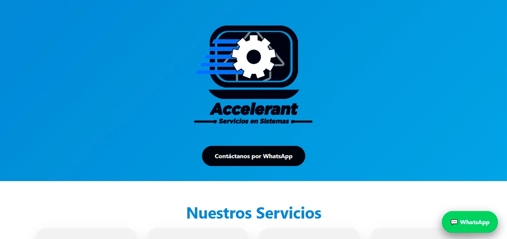
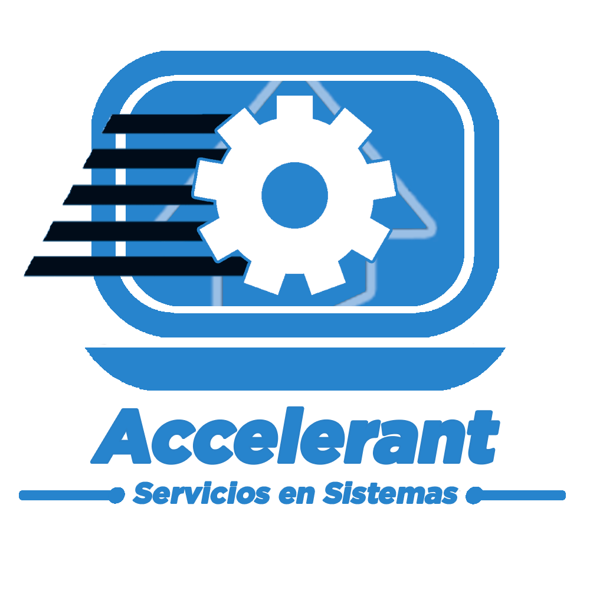
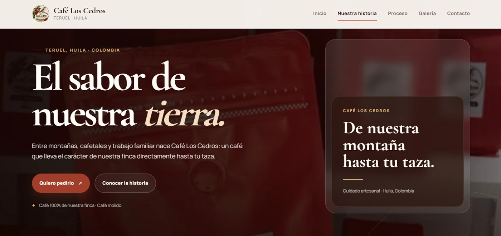
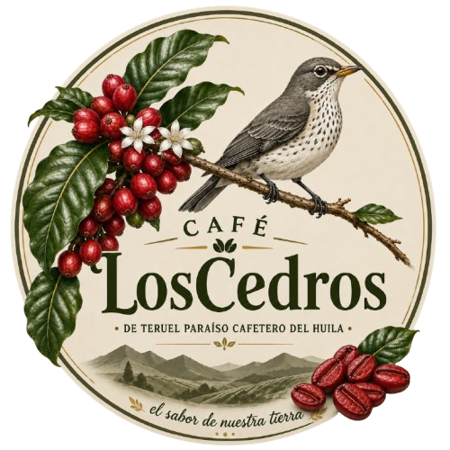
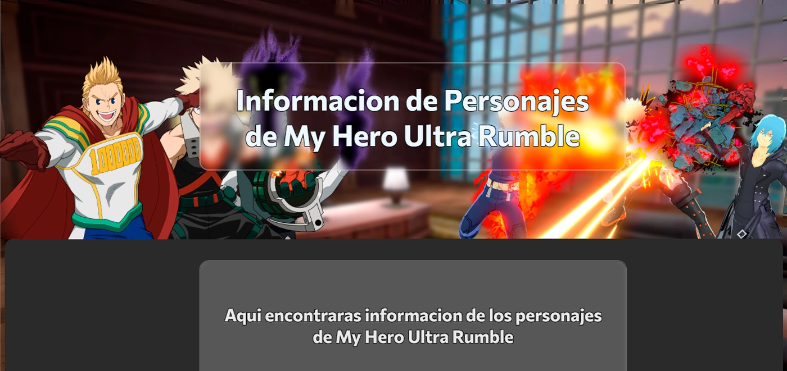

01
Desarrollo en formación
Soy estudiante del Técnico en Programación de Software del SENA, ficha 3445699. Mi enfoque actual está en el desarrollo web y en transformar ideas en páginas funcionales, claras y atractivas.
Disponible para proyectos
Soy Juan Diego Perdomo Cordón, desarrollador web independiente en formación. Creo sitios modernos, responsivos y enfocados en comunicar bien cada proyecto.
01const developer = {
02 name: "Juan Diego",
03 focus: "Web Development",
04 stack: ["HTML", "CSS", "JS"],
05 learning: true,
06 coffee: ∞
07};
08
01 · Sobre mí
Soy estudiante del Técnico en Programación de Software del SENA, ficha 3445699. Mi enfoque actual está en el desarrollo web y en transformar ideas en páginas funcionales, claras y atractivas.
Gran parte de lo que aprendo lo llevo directamente a proyectos. Así he ido construyendo páginas reales para practicar estructura, diseño, interacción, publicación y mantenimiento.
Tengo conocimientos básicos de Photoshop para crear anuncios y piezas gráficas sencillas, algo que me ayuda a pensar el desarrollo web desde una perspectiva visual.
02 · Habilidades
No busco aparentar saberlo todo. Estoy construyendo una base sólida y ampliándola con cada proyecto.
Estructura semántica y organización de interfaces web.
Diseño visual, layouts, responsive design, transiciones y animaciones.
Interactividad, lógica del cliente y comportamiento dinámico.
Publicación de proyectos y uso de repositorios para organizar el trabajo.
Entorno principal para escribir, probar y organizar mis proyectos.
Diseño gráfico básico para anuncios y recursos visuales sencillos.
03 · Proyectos
Proyectos personales, académicos y de emprendimiento que representan mi proceso de aprendizaje.

PROYECTO PROPIO
Accelerant Servicios en SistemasSitio web para mi propio emprendimiento de servicios en sistemas. Presenta servicios, propuesta de valor y canales de contacto para clientes.

PUBLICACIÓN
Café Los Cedros El sabor de nuestra tierraSitio web para presentar la historia, proceso, galería y contacto de un proyecto cafetero de Teruel, Huila.

PROYECTO EDUCATIVOPágina educativa creada para practicar HTML y construir una interfaz de consulta de personajes y sets especiales del videojuego.
Este portafolio también forma parte de mi proceso: irá creciendo a medida que crezca mi experiencia.
04 · Contacto
Si necesitas un sitio web, una página para tu proyecto o quieres hablar sobre una idea, puedes contactarme directamente.
Desarrollador web en formación · Teruel, Huila, Colombia
Volver arriba ↑